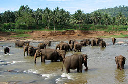
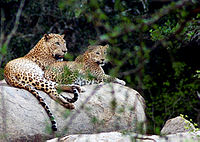

wiledlife
Botanical/zoological gardens
 Despite its small size, Sri Lanka possesses a high level of biodiversity and wildlife resources, and is rated among the 34 biodiversity hotspots in the world. Many species of flora and fauna are indigenous to Sri Lanka. This has made the island a country with the highest rates of biological endemism in the world. Thirteen percent of Sri Lanka's land surface has been designated as Wildlife Protected Areas (WLPAs), which at present exceed a total area of 8500 km2. Approximately 7% of the area is national parks, the areas allowed for the public to see and study wildlife. Sri Lanka's national parks have been become popular tourist destinations.